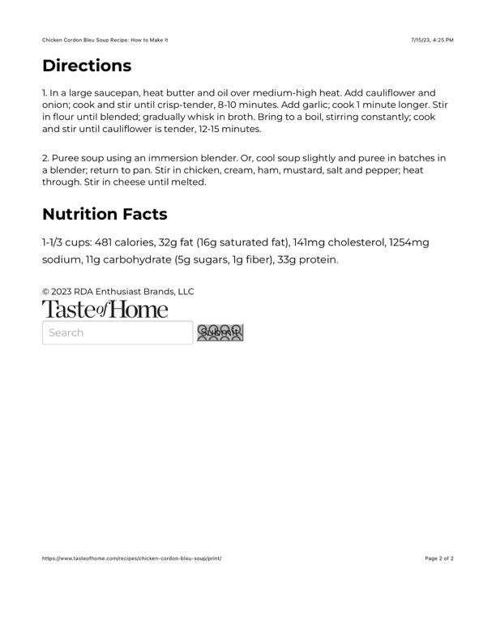

Chicken Cordon Bleu Soup Recipe: How to Make It

Original cookbook page 483
Ingredients
- 2 tablespoons butter
- 1 tablespoon olive oil
- 2 cups cauliflower florets
- 1 onion, chopped
- 2 cloves garlic, minced
- 1/4 cup all-purpose flour
- 3 cups chicken broth
- 2 cups cooked chicken, diced
- 1 cup heavy cream
- 1 cup diced ham
- 1 tablespoon Dijon mustard
- Salt and pepper to taste
- 1 cup shredded Swiss cheese
Instructions
- In a large saucepan, heat butter and oil over medium-high heat. Add cauliflower and onion; cook and stir until crisp-tender, 8-10 minutes. Add garlic; cook 1 minute longer. Stir in flour until blended; gradually whisk in broth. Bring to a boil, stirring constantly; cook and stir until cauliflower is tender, 12-15 minutes.
- Puree soup using an immersion blender. Or, cool soup slightly and puree in batches in a blender; return to pan. Stir in chicken, cream, ham, mustard, salt and pepper; heat through. Stir in cheese until melted.
Recipe #483 from collection